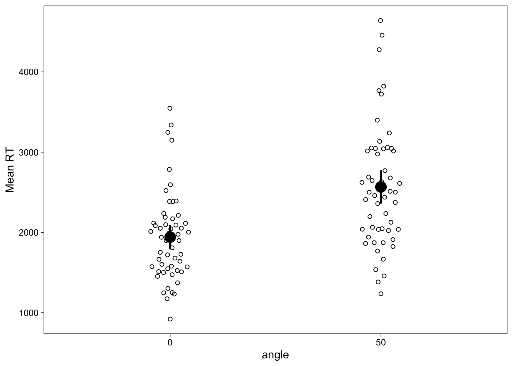

![]()
if (!file.exists("data.zip")) {
download.file("https://ndownloader.figshare.com/files/1878093", "data.zip")
}
unzip("data.zip")
files <- list.files(
"Behavioural_data/",
pattern = "sub[0-9]+.xlsx", full.names = T
)
dat <- map(
files,
~ read_xlsx(.x, range = "A4:G100", col_types = rep("text", 7))
) %>%
bind_rows(.id = "id")
dat <- dat %>%
filter(angle %in% c("0", "50")) %>%
transmute(
id = factor(id),
angle = factor(angle),
rt = as.numeric(Time),
accuracy = as.numeric(`correct/incorrect`)
)Today, we’ll take a look at creating a specific type of visualization for data from a within-subjects experiment (also known as repeated measures, but that can sometimes be a misleading label). You’ll often see within-subject data visualized as bar graphs (condition means, and maybe mean difference if you’re lucky.) But alternatives exist, and today we’ll take a look at within-subjects scatterplots.
For example, Ganis and Kievit (2015) asked 54 people to observe, on each trial, two 3-D shapes with various rotations and judge whether the two shapes were the same or not.
There were 4 angles (0, 50, 100, and 150 degree rotations), but for simplicity, today we’ll only look at items that were not rotated with respect to each other, and items rotated 50 degrees. The data are freely available (thanks!) in Excel format, and the below snippet loads the data and cleans into a useable format:
| id | angle | rt | accuracy |
|---|---|---|---|
| 1 | 0 | 1355 | 1 |
| 1 | 50 | 1685 | 1 |
| 1 | 50 | 1237 | 1 |
| 1 | 0 | 1275 | 1 |
| 1 | 50 | 2238 | 1 |
| 1 | 0 | 1524 | 1 |
We’ll focus on comparing the reaction times between the 0 degree and 50 degree rotation trials.
Subject means
We’ll be graphing subjects’ means and standard errors, so we compute both first
dat_sum <- group_by(dat, id, angle) %>%
summarize(
m = mean(rt, na.rm = T),
se = sd(rt, na.rm = TRUE) / sqrt(n())
)| id | angle | m | se |
|---|---|---|---|
| 1 | 0 | 1512.12 | 146.50 |
| 1 | 50 | 2039.42 | 133.74 |
| 10 | 0 | 2784.39 | 301.94 |
| 10 | 50 | 3766.58 | 337.51 |
| 11 | 0 | 3546.30 | 388.03 |
| 11 | 50 | 4639.84 | 281.78 |
dat_sum %>%
ggplot(aes(x = angle, y = m)) +
stat_summary(
fun.data = mean_cl_normal, size = 1
) +
geom_quasirandom(width = .1, shape = 1) +
scale_y_continuous("Mean RT")
This figure shows quite clearly that the mean reaction time in the 50 degree angle condition was higher than in the 0 degree angle condition, and the spread across individuals in each condition. However, we often are specifically interested in the within-subject effect of condition, which would be difficult to visually display in this image. We could draw lines to connect each point, and the effect would then be visible as a “spaghetti plot”, but while useful, these plots may sometimes be a little overwhelming especially if there’s too many people (spaghetti is great but nobody likes too much of it!)
Within-subject scatterplots
To draw within-subjects scatterplots, we’ll need a slight reorganization of the data, such that it is in wide format with respect to the conditions.
dat_sum_wide <- dat_sum %>%
pivot_wider(names_from = angle, values_from = c(m, se))| id | m_0 | m_50 | se_0 | se_50 |
|---|---|---|---|---|
| 1 | 1512.12 | 2039.42 | 146.50 | 133.74 |
| 10 | 2784.39 | 3766.58 | 301.94 | 337.51 |
| 11 | 3546.30 | 4639.84 | 388.03 | 281.78 |
| 12 | 1251.04 | 1767.54 | 125.10 | 211.44 |
| 13 | 1372.54 | 2037.67 | 86.25 | 167.52 |
| 14 | 1231.92 | 1666.25 | 84.09 | 126.10 |
Then we can simply map the per-subject angle-means and standard errors to the X and Y axes. I think it’s important for these graphs to usually have a 1:1 aspect ratio, an identity line, and identical axes, which we add below.
ggplot(dat_sum_wide, aes(x = m_0, y = m_50)) +
# Equalize axes
scale_x_continuous("RT (0 degrees)", limits = c(500, 5000)) +
scale_y_continuous("RT (50 degrees)", limits = c(500, 5000)) +
# Identity line
geom_abline(size = .25) +
# 1:1 aspect ratio
theme(aspect.ratio = 1) +
# Points and errorbars
geom_point() +
geom_linerange(aes(ymin = m_50-se_50, ymax = m_50+se_50), size = .25) +
geom_linerange(aes(xmin = m_0-se_0, xmax = m_0+se_0), size = .25)
This plot shows each person (mean) as a point and their SEs as thin lines. The difference between conditions can be directly seen by how far from the diagonal line the points are. Were we to use CIs, we could also see subject-specific significant differences. Points above the diagonal indicate that the person’s (mean) RT was greater in the 50 degrees condition. All of the points lie below the identity line, indicating that the effect was as we predicted, and robust across individuals.
This is a very useful diagnostic plot that simultaneously shows the population- (or group-) level trend (are the points, on average, below or above the identity line?) and the expectation (mean) for every person (roughly, how far apart the points are from each other?). The points are naturally connected by their location, unlike in a bar graph where they would be connected by lines. Maybe you think it’s an informative graph; it’s certainly very easy to do in R with ggplot2. Also, I think it is visually very convincing, and doesn’t necessarily lead one to focus unjustly just on the group means: I am both convinced and informed by the graph.
Conclusion
Within-subject scatter plots are pretty common in some fields (psychophysics), but underutilized in many fields where they might have a positive impact on statistical inference. Why not try them out on your own data, especially when they’re this easy to do with R and ggplot2?
Recall that for real applications, it’s better to transform or model reaction times with a skewed distribution. Here we used normal distributions just for convenience.
Finally, this post was made possible by the Ganis and Kievit (2015) who generously have shared their data online.
References
Ganis, Giorgio, and Rogier Kievit. 2015. “A New Set of Three-Dimensional Shapes for Investigating Mental Rotation Processes: Validation Data and Stimulus Set.” Journal of Open Psychology Data 3 (1). https://doi.org/10.5334/jopd.ai.
Reuse
Citation
BibTeX citation:
@online{vuorre2017,
author = {Vuorre, Matti},
title = {How to Create Within-Subject Scatter Plots in {R} with
Ggplot2},
date = {2017-01-04},
url = {https://vuorre.com/posts/2017-01-04-within-subject-scatter},
langid = {en}
}
For attribution, please cite this work as:
Vuorre, Matti. 2017. “How to Create Within-Subject Scatter Plots
in R with Ggplot2.” January 4, 2017. https://vuorre.com/posts/2017-01-04-within-subject-scatter.